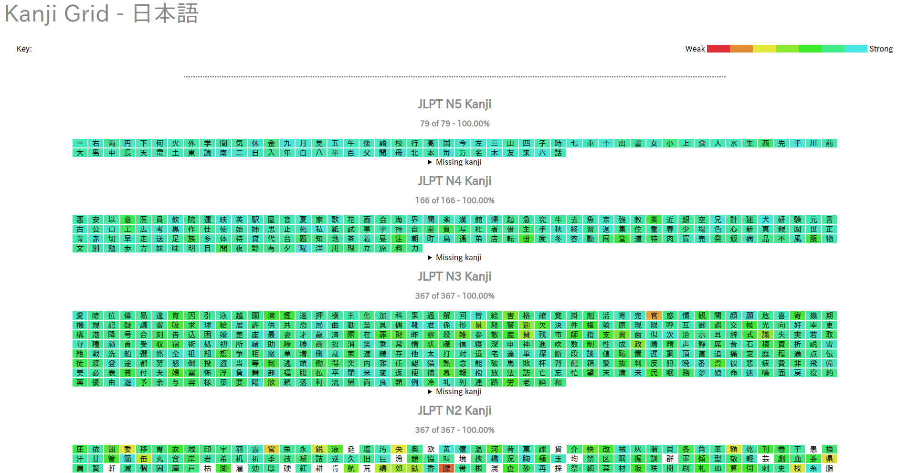

Hello, I am VIDAL Antoine. After obtaining a High School Diploma at the Lycée Hoche, I headed towards the Engineering Degree at the ISTY. I'd like to become Back-End developer (or Full-Stack if possible).
Computers and programming is a field I have interest in. Given their omnipresence nowadays, it is hard to do without. That's why I would like to make my career in this field.
During my course at the ISTY, I familiarized with the well-known programming languages : C, Python,... Nevertheless I always want to broaden my knowledge and thus discovering new languages doesn't repel me.
If you would like to know more about me you can look at my resume CV (although it is in French) or my Github.
Apart from computer engineering, I am very interested in the japanese culture. Their mindset and way of thinking is very enriching for a westerner. I haven't reached perfect fluency in Japanese right now but I'd like to pass JLPT N3 (equivalent of the B1 level from the CEFRL, JLPT being an equivalent of the TOEIC).
You can find various documents regarding my knowledge of the Japanese language which are from the Anki software. The first file represents all the vocabulary learned up to now, and is from this deck. The other files are web pages which only represent the kanjis that I am familiar with : there is the ordering according to the elementary japanese school (教育漢字) and according to the JLPT.
Japanese Deck | Kanji Grid Grade order | Kanji Grid JLPT order
